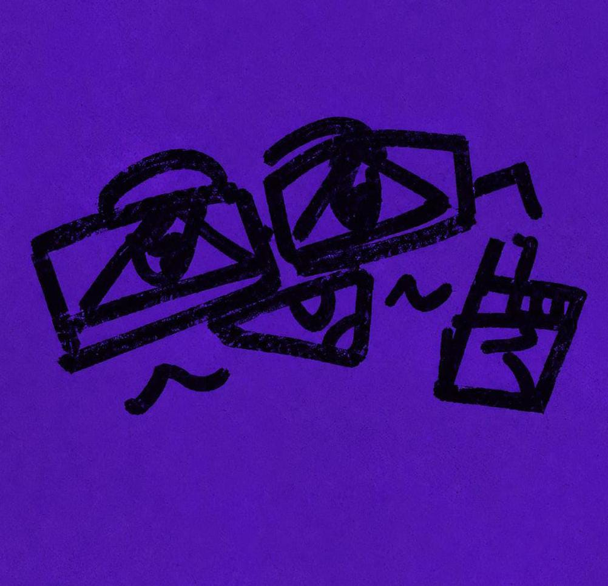

Beca 18
Un programa de becas peruano que apoya a estudiantes elegibles en la búsqueda de educación superior. ESTADO: cerrada

Amuyt'aya.impulsaLas oportunidades existen. Encontrarlas no debería ser la parte más difícil. Hagamos que el acceso a la información educativa sea más fácil para todos.
Un proyecto nacido de la convicción de que el lugar de donde vienes no debería determinar las oportunidades que llegas a descubrir.
LA RAZÓN DETRÁS DEL PROYECTO
Amuyt'aya.impulsa fue creado con la finalidad de mostrar puertas donde ya existían para estudiantes a nivel nacional,
frente a una desigualdad de información en el Perú que sigue siendo un problema constante. Según el Centro Nacional de Planeamiento Estratégico (Ceplan, 2025),
la vulnerabilidad educativa genera disparidades entre las regiones que «impactan negativamente en la competitividad de las regiones más vulnerables, limitando
su desarrollo económico y social», por lo que reducirla es clave para «ofrecer mejores oportunidades a las futuras generaciones», tal como se menciona desde la
Pontificia Universidad Católica del Perú (PUCP, 2026), al destacar que en el país «millones de estudiantes enfrentan enormes desigualdades de acceso, calidad y
oportunidades». Habiendo vivido esta misma problemática en carne propia, decidí crear esta iniciativa para asegurarme de que ningún otro estudiante vea su
futuro limitado por la falta de información.
REFERENCIAS BIBLIOGRÁFICAS:
Centro Nacional de Planeamiento Estratégico. (10 de marzo de 2025). Vulnerabilidad educativa en el Perú: desafíos y desigualdades persisten en las regiones. Gob.pe. https://www.gob.pe/institucion/ceplan/noticias/1124223-vulnerabilidad-educativa-en-el-peru-desafios-y-desigualdades-persisten-en-las-regiones
Pontificia Universidad Católica del Perú. (18 de junio de 2026). Los retos urgentes: las tareas pendientes para cerrar brechas y fortalecer la educación peruana. PuntoEdu. https://puntoedu.pucp.edu.pe/actualidad/los-retos-urgentes-las-tareas-pendientes-para-cerrar-brechas-y-fortalecer-la-educacion-peruana
Tu origen no es tu límite.